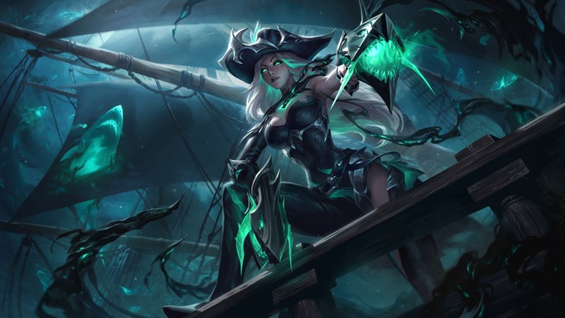

Le Nalvoht
Organisation :
Le capitaine a les pleins pouvoirs, l'équipage approuve son commandement et il est respecté.
Dirigeant :
Ce qui, d'après quelques dires, serait une entité, a défini un capitaine de navire. Ce capitaine, non-mort, est depuis toujours aux commandes.
Nombres de membres :
150 matelots font partis de l'équipage.
Mots d'ordre :
Les membres du Nalvoht sont les yeux et les oreilles de Ga'ar en dehors des Tertres du Temps mais aussi une force d'action discrète et précise.
Recrutement :
L'équipage fantôme est le même depuis toujours. Parfois, de nouvelles têtes spectrales viennent le rejoindre, elles sont bien souvent rongées par la haine.
Une forme se dessine au-dessus d'une grande cité ? Une ombre si grande et épaisse qu'elle avale les néons, le brouhaha et les bâtiments ? Peut-être que le Nalvoht vous offre la vision d'une de ses dévastatrices apparitions.
Si son existence n'est pas confirmée par les gouvernements, ni même par les explorateurs, les légendes urbaines abordent son sujet de la façon la plus vague sur laquelle il puisse glisser sur les orages. La Larme de l'Yndrill qui reposait à Guénazar aurait été pillée par son œuvre, ou plutôt celui de son équipage.
Mais qu'est-ce que le Nalvoht ? Un navire fantôme dont la coque se serait redressée de son naufrage au côté de ceux qui en étaient membres, juste après l'arrivée de Ga'ar sur les Tertres-du-Temps. Ayant reposé un certain temps dans le cimetière des noyés, il a finalement continué sa route, sous un commandement nouveau, celui du Néant. Planant sous sa forme opaque, invisible aux yeux des indiscrets, seule son ombre témoigne de sa présence. En être témoin, est le plus grand signe de malheur dans les superstitions de l'Yndrill, il apporterait la maladie, des attentats, des pillages et semerait les graines de discordes qui l'ont engendré.
Son capitaine n'est pas humain. À vrai dire, nul ne sait vraiment ce qu'il est, pas même ceux qu'il dirige. Tout ce que nous savons, c'est qu'il sert Ga'ar, que son âme régénère le navire à l'infini et qu'il définit un dirigeant parmi les non-morts du groupe pirate, venant administrer les éléments du cortège funèbre. Serait-ce une entité ? Le navire lui-même ou une autre ignominie ?
Sa carcasse délabrée laisse le sang sur son sillage, soyez prudents, ne vous laissez pas enivrer par les murmures des spectres qui l'animent.